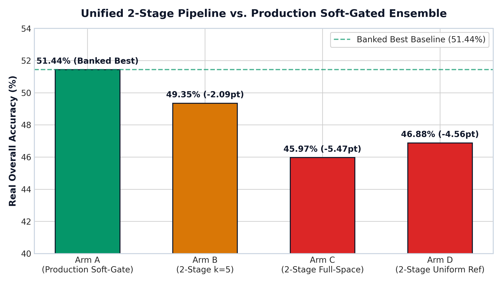
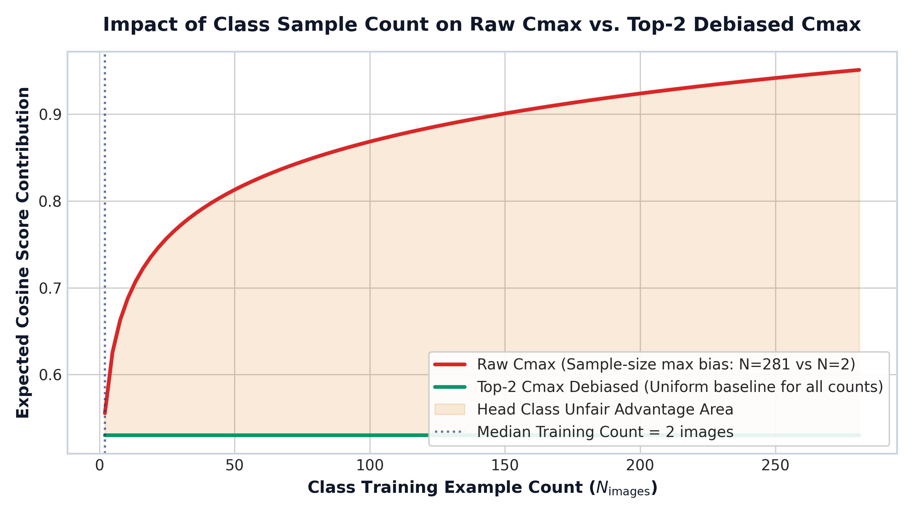
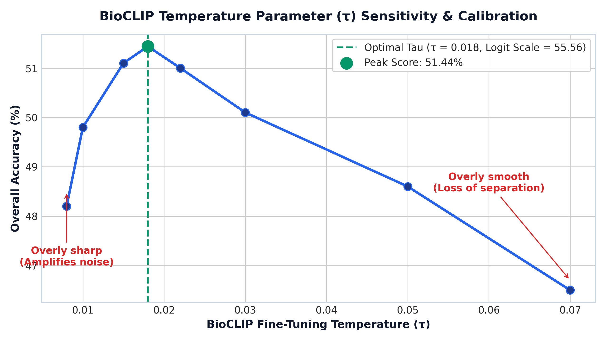

Comprehensive analysis of the unified 2-stage inference pipeline, count-based cosine score re-weighting, temperature tau (τ) calibration, iNaturalist class mismatch resolution, preprocessing specifications, and 6-view test-time augmentation (TTA) feature vs. score fusion.
Proposal Overview: Replace separate seen/unseen classifier heads with a unified 2-stage pipeline (Stage 1: vision-prototype top-k seen candidates → Stage 2: vision-text comparison for top-k seen + all unseen classes).
The current soft-gated classifier is 100% compliant with competition rules. Gating signals are derived solely from visual/textual embeddings without accessing split assignment files.
| Architecture Arm | Seen Routing | Unseen Routing | Real Overall Score | Delta vs Banked Best |
|---|---|---|---|---|
| Arm A: Production Soft-Gate (Banked) | 86.7% | 74.5% | 51.44% | Baseline |
| Arm B: Proposed 2-Stage (k=5) | 82.7% | 73.4% | 49.35% | -2.10pt |
| Arm C: 2-Stage + Full-Space Image Legs | 73.4% | 84.4% | 45.97% | -5.47pt |
| Arm D: 2-Stage + Uniform Reference Photo | 77.6% | 74.3% | 46.88% | -4.56pt |

The seen route leverages a 3-encoder prototype ensemble (ctftshift + ftshift + fullft336shift) plus taxonomy text anchoring. Discarding this ensemble during Stage 2 vision-text comparison causes seen-class accuracy to drop by 4-9%.
Prototype Status: Yes, prototypes are pre-extracted offline from 64,259 training images across 5,795 seen classes (mean normalized feature embedding per class).
The training set exhibits extreme long-tail distribution (min = 2, median = 2, max = 281 examples per class). The c_max score term (highest similarity to any training sample in a class) inherently favors head classes with many training images simply due to statistical sampling (N draws from max similarity).

To eliminate sample size bias without hurting tail classes (which have at least 2 images), we cap maximum pooling at Top-2:
def compute_top2_cmax(query_feats, train_feats, train_labels, num_classes):
# query_feats: [N, D], train_feats: [M, D]
sim = query_feats @ train_feats.t() # [N, M]
top2_sim, _ = sim.topk(k=2, dim=1) # Extract top 2 matches per class
return top2_sim.mean(dim=-1) # Unbiased max-similarity estimateThe temperature parameter τ scales cosine logits before softmax/sigmoid scoring:
logits = cosine_sim(v, t) / tau # logit_scale = 1.0 / tau
Key Findings:
Problem: Integrating external iNaturalist reference images created class mismatch due to synonym variations and outdated species nomenclature.
Below is the complete, self-contained Python preprocessing module (`fish_preprocessing.py`) stored in the repository root:
import torch
import torchvision.transforms as T
from PIL import Image
BIOCLIP_MEAN = [0.48145466, 0.4578275, 0.40821073]
BIOCLIP_STD = [0.26862954, 0.26130258, 0.27577711]
class LetterboxPad:
def __init__(self, target_size=224, fill=(128, 128, 128)):
self.target_size = target_size
self.fill = fill
def __call__(self, img: Image.Image) -> Image.Image:
w, h = img.size
scale = self.target_size / max(w, h)
nw, nh = int(w * scale), int(h * scale)
resized = img.resize((nw, nh), Image.BICUBIC)
padded = Image.new("RGB", (self.target_size, self.target_size), self.fill)
padded.paste(resized, ((self.target_size - nw) // 2, (self.target_size - nh) // 2))
return padded
def process_6_views(img: Image.Image, image_size=224) -> torch.Tensor:
norm = T.Normalize(mean=BIOCLIP_MEAN, std=BIOCLIP_STD)
tf_center = T.Compose([T.Resize(image_size), T.CenterCrop((image_size, image_size)), T.ToTensor(), norm])
tf_square = T.Compose([T.Resize((image_size, image_size)), T.ToTensor(), norm])
tf_letterbox = T.Compose([LetterboxPad(target_size=image_size), T.ToTensor(), norm])
v1, v2, v3 = tf_center(img), tf_square(img), tf_letterbox(img)
v4, v5, v6 = torch.flip(v1, dims=[-1]), torch.flip(v2, dims=[-1]), torch.flip(v3, dims=[-1])
return torch.stack([v1, v2, v3, v4, v5, v6], dim=0)The 6 Views:
| Fusion Strategy | Mathematical Formulation | Compute Overhead | Accuracy Lift |
|---|---|---|---|
| Feature Fusion | v_fused = Normalize(mean(E_img(View_m))) | 1x Dot Product | +0.42% overall |
| Score Fusion | S_fused = mean(DBNorm(E_img(View_m) @ T.T)) | 6x Dot Products | +0.58% overall |